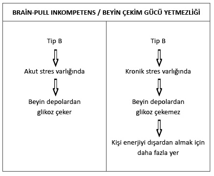

Şişmanlamanın evreleri

B grubundaki insanların stresten şişmanlamaları bir günden diğerine gerçekleşmez.
Bu süreç üç evreden oluşur:
1. evre: Bu, kronik stresin başladığı evredir. Genellikle insanlar üniversite eğitiminin ya da iş hayatının başlaması, kendi işini kurma, evlenme ya da çocuk sahibi olma gibi derin değişimlere yol açan durumlarda strese girerler. Stresin bu ilk evresinde B grubundaki insanlar da A grubundakiler gibi tepki verir.
Stres sistemleri devamlı aktiftir, kanlarında adrenalin ve kortizol hormonlarının seviyesi devamlı yüksektir ve beyin bu zor dönemde ihtiyaç duyduğu enerjiyi depolardan çeker. Yani stresin bu ilk evresinde B grubundaki insanlar da A grubundakiler gibi zayıflar. Ancak kişi bu evredeyken hayatında herhangi başka bir değişim daha meydana gelirse (bir yakınının hastalanması, ölümü, işsizlik, vb.) ve bunun sonucunda kronik stresli bir durum ortaya çıkarsa, devamlı yüksek dozda aktif olan beynin stres sisteminin çekim gücü (Brain-Pull) yavaş yavaş zayıflar. Bu, dış dünyada stresli durumun devam etmesine rağmen, kişinin nispeten “metanetli” olmasını sağlar, çünkü stres sistemi duruma ayak uydurduğundan artık kanda adrenalin ve kortizol hormonlarının seviyesi yüksek değildir.
Stres sisteminin çekim gücünün zayıflaması beynin kendi glikoz ihtiyacını artık tam anlamıyla depolardan karşılayamayacağı anlamına gelir. Bu durumda kişi beynin ihtiyaç duyduğu enerjiyi kısmen dışarıdan almak zorundadır (Body-Pull).
2. evre: Bu evrede insanlar yavaş yavaş kilo aldıklarının ayrımına vararak rahatsızlık duymaya başlarlar. Durumu değiştirebilmek adına herkes kendi tarzında çözümler arar. Bazıları diyet yapar, bazıları spor, bazıları her ikisini birden yapar, bazıları sigara içmeye başlar, bazılarıysa içtikleri sigara sayısını artırır. Ama bu durumla yüz yüze kalmış herkes yemeyi kontrol altına alır. Beyin bu evrede kendi ihtiyacını hâlâ kısmen depolardan karşıladığı için kanda kortizol hormonu mevcuttur. Bu evrenin ne kadar sürebileceğini kestirmek zordur. Süre, kişiden kişiye ve yaşanılan streslere göre değişebilir. Achim Peters’e göre bu evre 1 ila 10 yıl arasında da sürebilir, ömür boyu da. Çünkü bazıları kilo almaya başlar başlamaz yediğini içtiğini azaltır, günde iki paket sigara içer ve yaşamlarının geriye kalanını öyle geçirirler. Bunun son derece sağlıksız bir başa çıkma stratejisi olduğunu söylemeye bile gerek yoktur.
3. evre: Kişinin yaşadığı kronik stres durumunda herhangi bir değişiklik olmazsa, stres sistemi zamanla daha fazla güç kaybeder ya da tamamen devre dışı kalır. Bu duruma gelindiğinde kişi istese de istemese de yediklerini kontrol edemez. Çünkü beyin, stres sistemi tamamen devre dışı kaldığı için artık depoları hiçbir şekilde kullanamaz. Dolayısıyla ihtiyacını tamamen dışarıdan karşılamak zorundadır. Bu durumda kalanlar kaçınılmaz bir şekilde kilo alır.